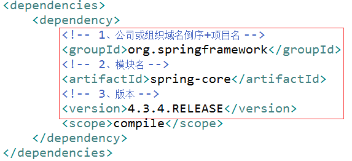
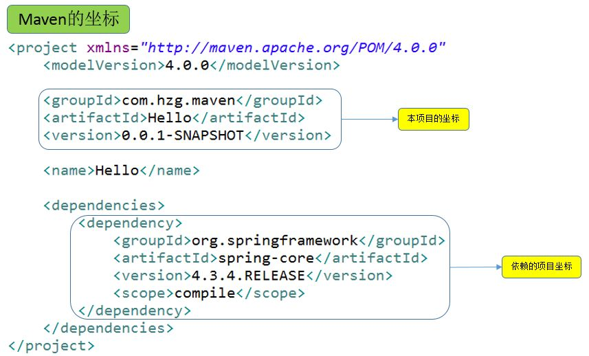

仓库和坐标
① pom.xml：**Project Object Model 项目对象模型。它是maven的核心配置文件，所有的构建的配置都在这里设置。
② 坐标：使用下面的三个向量在仓库中唯一的定位一个maven工程

③ maven工程的坐标与仓库中路径的关系：

maven坐标和仓库对应的映射关系：【groupId】【artifactId】【version】【artifactId】-【version】.jar
去本地仓库看一下此目录：org\springframework\spring-core\4.3.4.RELEASE\spring-core-4.3.4.RELEASE.jar
果然是完全对应的（默认仓库地址上面说过了哦，不要说不知道在哪，没事下面我们再说一下仓库）
④ 仓库
仓库的分类：
1、本地仓库：当前电脑上的仓库，路径上已经说过了哦
2、远程仓库：
- 私服：搭建在局域网中，一般公司都会有私服，私服一般使用nexus来搭建。具体搭建过程可以查询其他资料
- 中央仓库：架设在Internet上，像刚才的springframework就是在中央仓库上